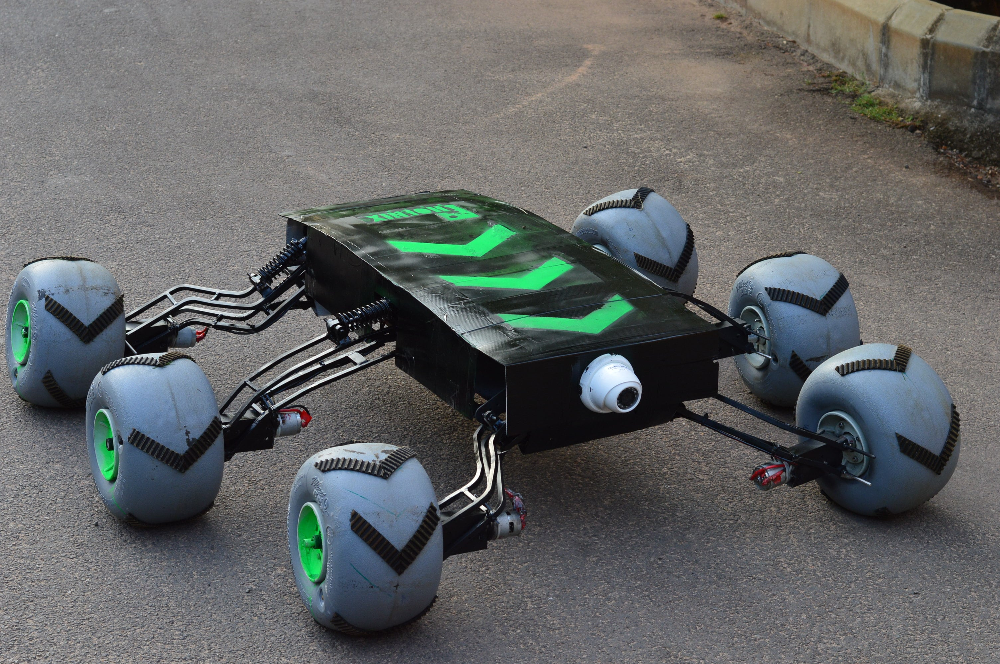

Phoenix I: University Rover Challenge
University Rover Challenge · Utah · 2016

About the project
Phoenix I is a rover built for the University Rover Challenge in Utah, USA, in 2016. I was the team lead for the project.
University Rover Challenge · Utah · 2016

Phoenix I is a rover built for the University Rover Challenge in Utah, USA, in 2016. I was the team lead for the project.